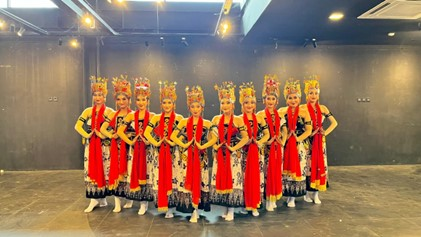
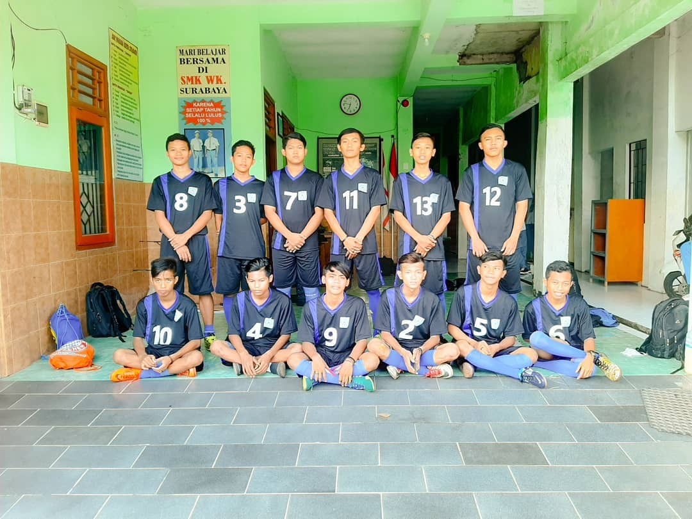
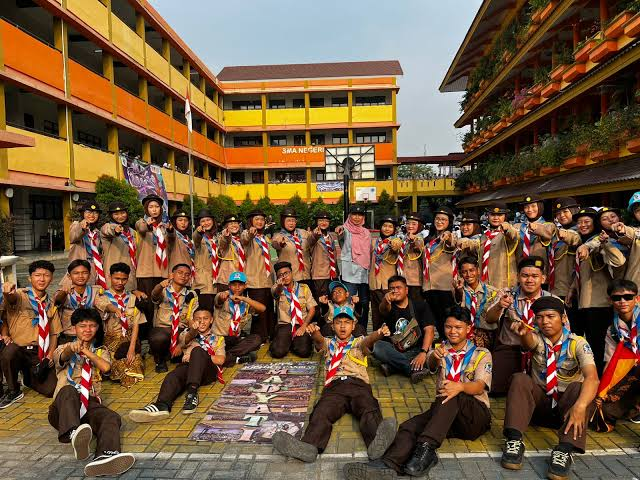
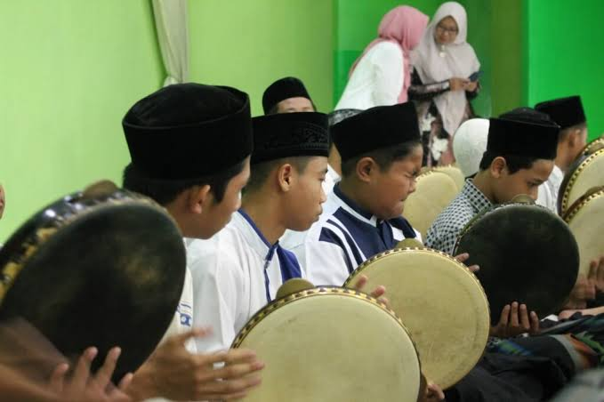
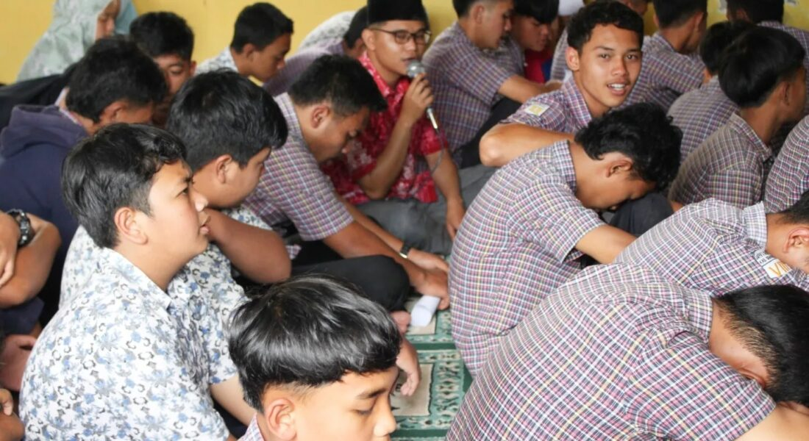

Ekstrakurikuler
Kegiatan Ekstrakurikuler
Wadah pengembangan minat, bakat, dan karakter siswa di luar jam pelajaran

Tari
Ekstrakurikuler tari tradisional dan modern yang melatih ekspresi, koordinasi, dan kecintaan terhadap budaya Nusantara.

Futsal
Tim futsal yang energik dan kompetitif, berlatih rutin untuk mengasah skill, kerjasama, dan strategi permainan.

Pramuka
Pramuka Wahanaloka membentuk karakter kepemimpinan, kemandirian, dan cinta tanah air melalui berkemah, PBB, dan survival.

Banjari
Ekstrakurikuler rebana banjari yang mengembangkan keterampilan musik religi, kerjasama tim, dan apresiasi seni islami.

BTQ
Baca Tulis Al-Qur'an (BTQ) untuk meningkatkan kemampuan membaca dan memahami Al-Qur'an dengan tajwid yang baik dan benar.